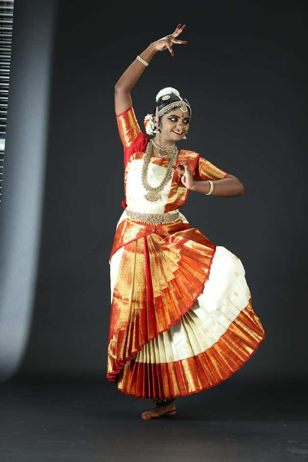
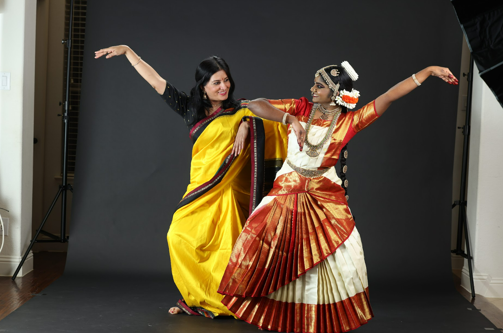
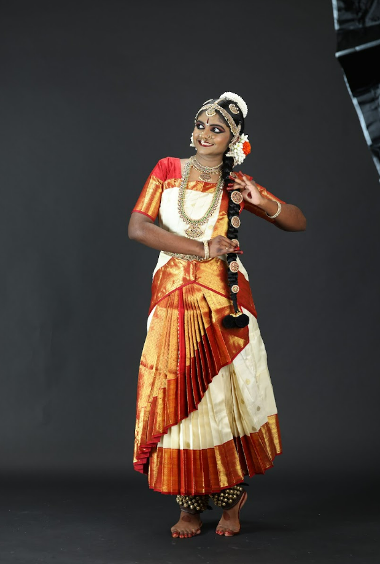
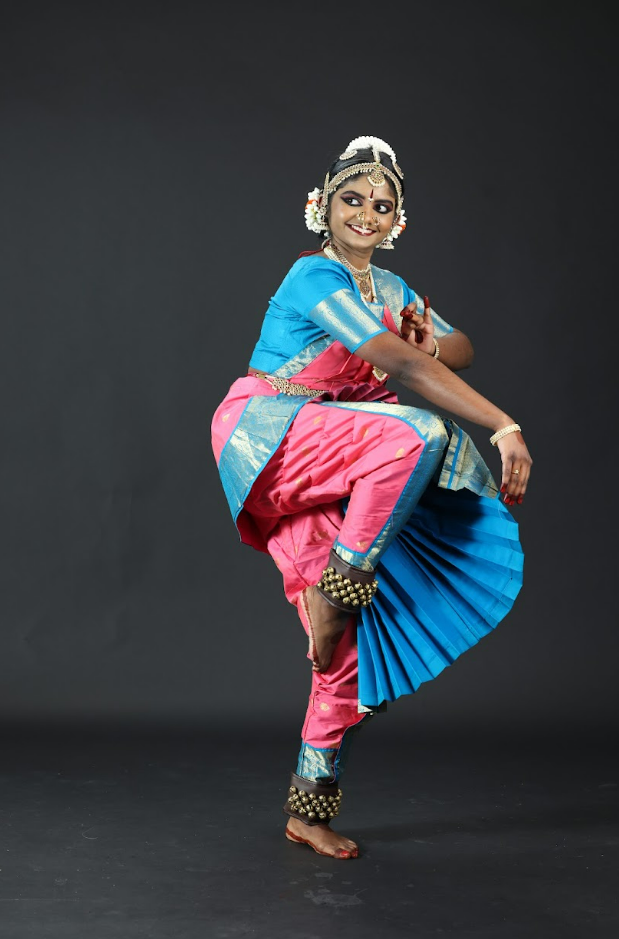
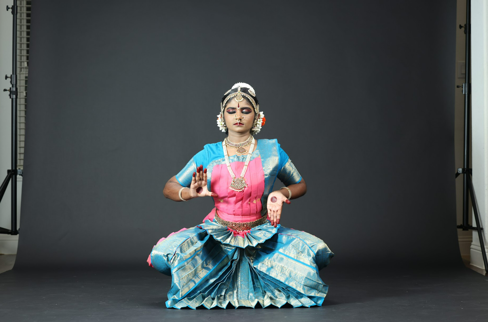
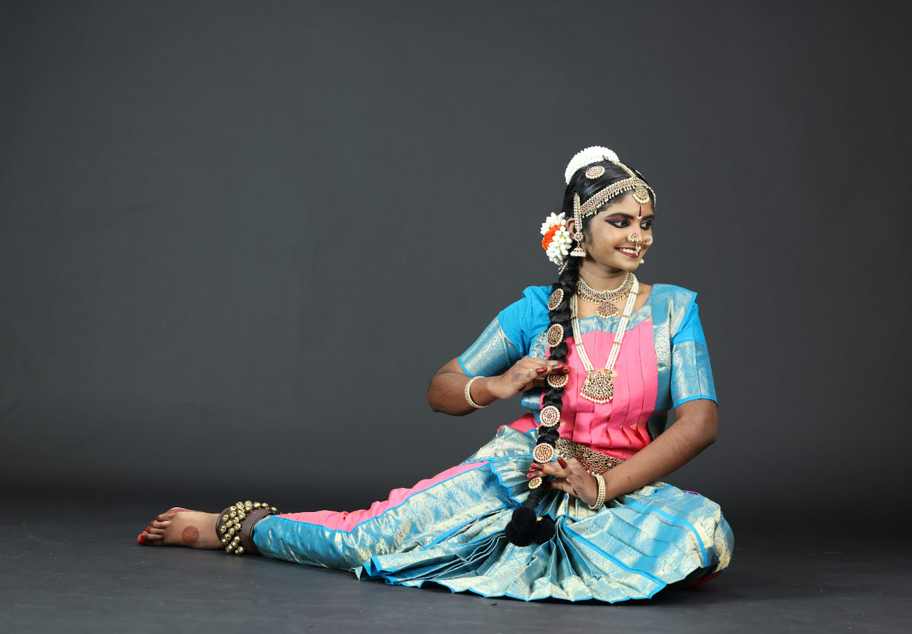

Seating Starts
Welcome address and traditional arathi check-in.
Scroll to Explore
We humbly request your gracious presence and blessings on this momentous occasion.
Join us on this auspicious occasion as we celebrate tradition, rhythm, and grace.
Welcome address and traditional arathi check-in.
The showcase of years of discipline and devotion begins.

Shibani’s tryst with Bharatanatyam began at the tender age of four, when she first stepped onto the sacred path of dance under the loving guidance of the renowned Bharatanatyam exponent and Malayalam actor, Guru Suchitra Murali. From the very beginning, her guru discerned in her a natural command of laya, tala, crisp adavus, and expressive abhinaya, and gently nurtured these gifts with discipline, devotion, and grace.
As her love for the art form deepened, Shibani continued her sadhana under Guru Manasha and Guru Bhuvana, each Guru adding refinement, depth, and beauty to her journey. For the past nine years, she has blossomed under the steadfast mentorship of Guru Alpna Jacob, whose patient guidance and unwavering support have shaped her into a dedicated and graceful young artiste.
Shibani’s connection to the arts flows beyond dance. A passionate singer, she has been training in music under Guru Nandhini Kambi since the age of five, keeping her firmly rooted in the rich traditions of Indian culture and heritage. Her artistic spirit also embraces Western music, where she has found expression as a viola player, harmoniously bridging classical and contemporary worlds.
A blend of strength and sensitivity, Shibani is also a Third Degree Black Belt, reflecting her discipline, focus, and inner resilience. In her academic life, she has actively participated in debate, earning accolades for her clarity of thought and expression, while contributing to many other clubs and activities in her school community.
This fall, Shibani will embark on a new chapter as she joins Texas Tech University as a Biology major, carrying with her the same curiosity, diligence, and dedication that have marked her artistic journey.
This Arangetram is not merely a performance, but a sacred milestone in Shibani’s voyage as a dancer — a humble offering at the feet of her Gurus, the divine, and all those who have blessed and encouraged her. It stands as a celebration of years of tapasya, love for the art, and the enduring support of her family and well‑wishers.
Alpana Kagal was inspired to join the Arathi School of dance after watching her Guru, Smt. Revathi Satyu’s riveting performance. Alpana began training and performed her Arangetram, in 1987 under the guidance of Smt. Revathi Satyu. She has continued studying and deriving inspiration under the guidance of Smt. Revathi Satyu, where she has participated in dance dramas such as Anmol Bhakti, Virangana, Nava Rasa Sansar, and Akhilam Madhuram. She has had further training with Guru’s Mahalingam Pillai, U.S. Krishna Rao and Chandrabhaga Devi, Padmini Ravi, Priyadarshini Govind, Maya Rao, and Radhika Ganesh.
In 1995 Alpana was featured as a lead dancer with the folk-dance company called ‘Sundara Mana Madhi Barali’. Alpana was a resident artist and performer with Big Thought of North Texas. She was highlighted in the Dallas Guide as a top children’s performer and has worked with the Dallas Theater Center’s summer program in merging dance and theater.
Alpana conducts various master classes and has created choreography for Texas Woman’s University, The University of North Texas, The University of Dallas, Brookhaven College, and Booker T. Washington school of arts. She currently resides in Frisco, Tx with her children Savini, Jude, and Siena.


Arathi School of Dance is located in Dallas, TX and was founded by Guru Revathi Satyu in 1980.
Revathi Satyu is a pioneering artist who introduced the art of Bharatanatyam to Dallas. She trained under renowned Gurus including U.S. Krishna Rao and Chandrabhaga Devi, Pandanallur Muthiah Pillai, Tanjore K.P. Kittappa Pillai, and Mysore Venkatalakshamma. From 1965 to 1974, Revathi was a celebrated Bharatanatyam dancer and stage actress in India, performing for distinguished personalities such as Sri Jayachamarajendra Wodeyar, Maharaja of Mysore; Prime Minister Indira Gandhi; and President V. V. Giri. In 1972, she was selected by the Government of India to represent her state at the Expo World Fair in Montreal, Canada.
In 1980, Revathi established the Arathi School of Dance in Dallas and San Antonio, shaping the careers of over 100 students. She has received numerous honors, including 'Singar Mani,' 'Karnataka Kalashri,' 'Bharata Kala Rathna,' 'Sangita Sambrahma,' and most recently, the Mary McLarry Lifetime Achievement Award from the Dance Council of North Texas. As a choreographer and Artistic Director, she has created many dance dramas, often raising funds for worthy causes.
Currently, Revathi serves as the President of the Indian Cultural Heritage Foundation, the Director of the Dance Council of North Texas, and the Founder/Director of Arathi School of Dance. Her school has quickly become a premier institution for Bharatanatyam education in the Dallas metroplex, offering classes at multiple locations to inspire and educate students of all ages.
Glimpses of grace, rhythm, and devotion.




For our family and friends across the globe, join us digitally.
The broadcast will begin 15 minutes prior to the event.